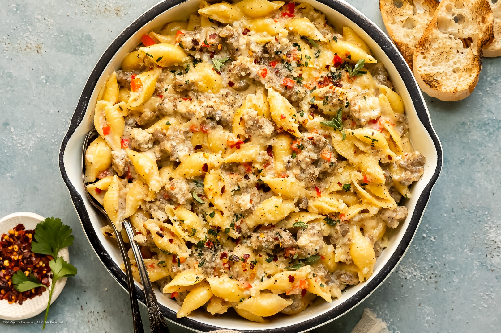

Creamy Sausage Pasta

Description
I made this recipe for the first time and wow-ed myself! In short, it is absolutely delicious and you’ll never look at lasagne sheets the same way again. This Creamy Sausage Pasta uses fresh lasagne sheets that are torn or cut into strips. They give “homemade pasta vibes” without any kneading in sight … and they are cooked within 1 minute! Just a quick soak in boiling water and they are ready to get tossed through one of the most ultra-luxurious, creamy, flavoursome sauces you will ever taste. Sausages are the key ingredient that packs flavour into this recipe – fast.
This pasta is on the table in less than 20 minutes! I love using mild Italian sausages, which are generally seasoned with garlic and fennel, as they work so well in this recipe – blending with the creamy, garlicky sauce that’s made even tastier with parmesan and chicken stock. However, regular pork, beef or chicken sausages work great too, as they are more subtle in flavour, appealing to a wide range of tastes. You can up the spice by adding chilli (red pepper) flakes or leave it mild. Either way, you will absolutely love this comforting dinner, made with familiar ingredients that the whole family will adore.
Ingrediants
- Salt, for pasta water
- 250 g (9 oz) fresh lasagne sheets, or pasta of your choice (see note 1)
- 450 g (1 lb) Italian pork sausages (mild or spicy), casings removed
- 1 tbsp freshly minced garlic
- 1 tbsp tomato paste (concentrated puree)
- ½ cup (125 ml) dry white wine (or more chicken stock)
- 1 cup (250 ml) chicken stock
- 1 tbsp Italian mixed herbs (Italian seasoning)
- ½ tsp crushed chilli (red pepper) flakes (optional)
- 1 cup (250 ml) thickened (heavy) cream
- ½ cup (50 g) freshly grated parmesan, plus extra to serve
Steps
- Fresh lasagne sheets – If using fresh lasagne sheets, prepare them by cutting or tearing them into strips, roughly 2.5 cm (1 inch) thick. Cook them AFTER you have prepared the sauce. They will only need 30–60 seconds and can then be drained and added directly to the sauce.
- Regular pasta – If you are using regular pasta, cook the pasta as per the packet instructions, less 1 minute. Drain well. They will continue cooking in the sauce.
- Heat the olive oil in a large pan over medium heat.
- Add the sausages and cook, breaking them into small pieces with a spatula or wooden spoon, for about 5 minutes, until browned and cooked through.
- Add the garlic and cook for another 30 seconds until fragrant.
- Stir in the tomato paste and cook for 1–2 minutes to caramelise it and enhance its flavour.
- Add the white wine (or chicken stock) and let it simmer for 2–3 minutes, scraping the bottom of the pan to deglaze and pick up any browned bits.
- Once most of the wine has evaporated, add the chicken stock. Cook for 2–3 minutes until it has reduced by half.
- Stir in the Italian mixed herbs and crushed chilli flakes, if using.
- Add the cream, stirring well to combine, and let the sauce simmer for 3–4 minutes until slightly thickened.
- Stir in the grated parmesan and season with salt and pepper to taste. Turn the heat off, add the cooked pasta and stir it through the sauce. Garnish with the basil.
- The pasta will begin to absorb the sauce the longer it sits (although leftovers taste amazing the next day!). It is best served immediately, with extra parmesan if desired.